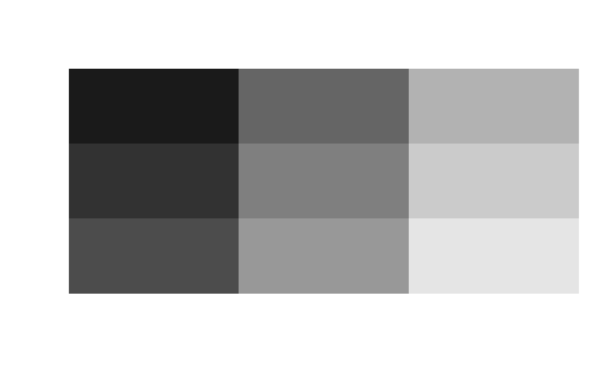
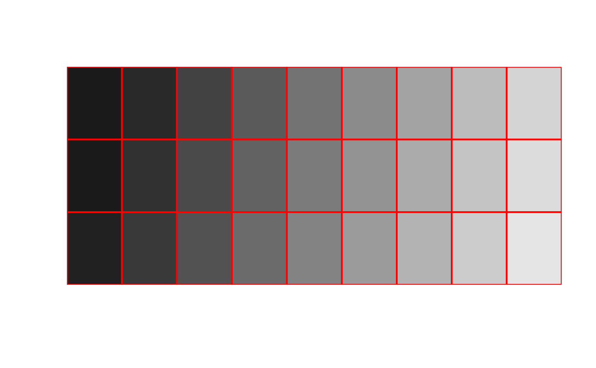

Creates a grid of colored or gray-scale rectangles. This function is similar
to graphics::image() when used for a matrix but simpler (i.e
less available features).
image2( x, from = NULL, to = NULL, color_scale = NULL, border = NA, add_value = FALSE, val_cex = 1, n_signif = 2, ... )
Arguments
| x | a matrix or an object to be coerced as a matrix. |
|---|---|
| from | matrix values equal to or smaller than |
| to | values equal to or larger than |
| color_scale | a vector of colors. |
| border | color for rectangle borders (see |
| add_value | a logical should value be added in the middle of the rectangles drawn? |
| val_cex | coefficient of magnification used if values are displayed. |
| n_signif | number of significant numbers to be displayed (used when labelc is |
| ... | further arguments to be passed to |
Details
This function actually draws rectangles to create an image from a matrix.
Unlike graphics::image(), image2 the image is ordered just as the
matrix is displayed meaning that the cell (1,1) is at the upper left cell of
the plot drawn. Note that currently neither titles nor axes' labels are added
user should call the graphics::title() and graphics::axis().
Concerning the latter, the user should be aware that cell's coordinates range
from 0 to 1 with 0 being the coordinates of the first cell and 1 the
coordinates of the last cell (if there is only one cell then the center of
the unique cell is 0).
See also
Examples
